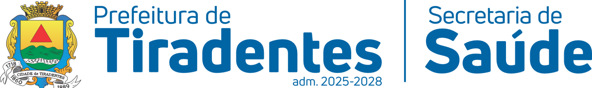

Sistema de projeção: Coordenadas UTM, SIRGAS 2000, Zona 23S
Imagem e informações base: Google Inc.
Base de dados: Secretaria Municipal de Saúde - Prefeitura Municipal de Tiradentes Administração 2025-2028
Responsável técnica pelo mapeamento: Ana Luísa Teixeira
Coordenadora da Atenção Primária: Camylla Sousa do Carmo
Data de elaboração e publicação: Maio/2026